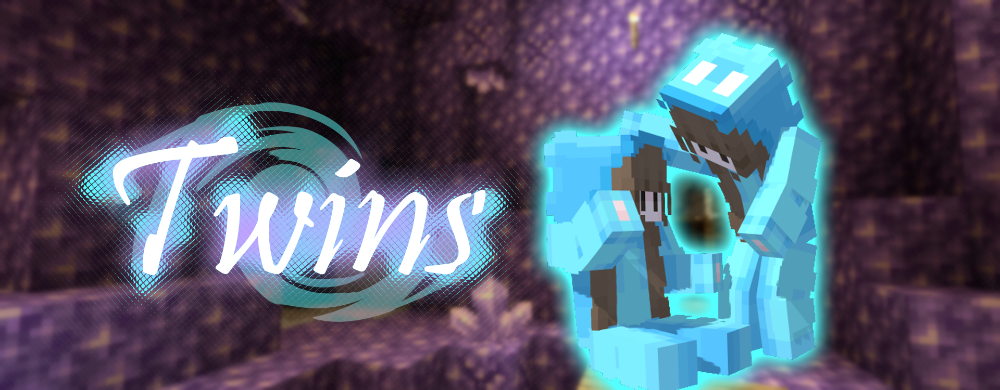
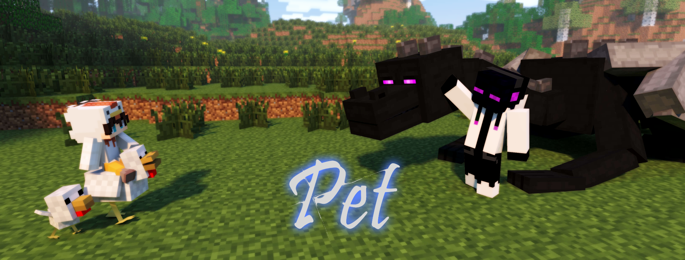
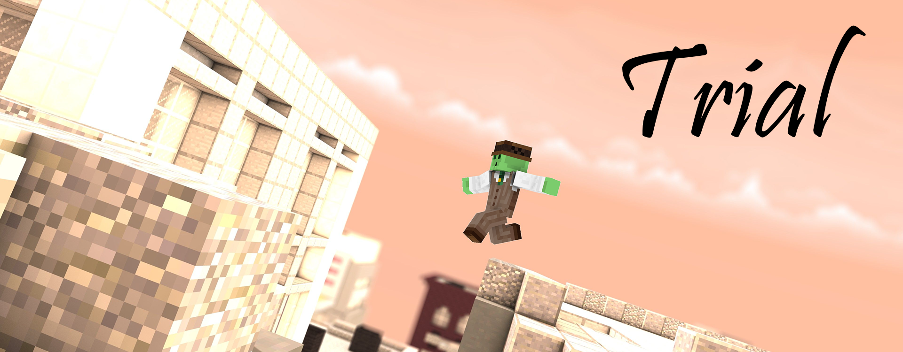

PHASE-05
PHASE-05には「新ウェポン」が追加されます。
そのほかにも、新たなガジェットや機能の変更があります。
HELLO NEWCOMER
ツインズ ❝Twins❞

分裂増殖を行えるアレイが、イミテイターとしてBowyersMCへ参戦します。
使用時に任意の向きに設定された分身を召喚します。この分身は常にリンクし、ジャンプやスニーク、鎧の状態まで同期しています。
さらに20ブロック以内であれば、スニークで双子の位置へ「集合」を行える。
敵の位置把握能力を乱す、撹乱特化の変化系ウェポン！
更に詳しい情報はウェポン紹介ページより。
HELLO NEW GADGET
ペット ❝Pet❞

カルマで購入ができるペットが追加されます。
このペットはロビーでのみ召喚でき、放置の際や他のプレイヤーとわちゃわちゃする為に実装されました。
様々な種類のペットがあり、個性も豊かなのでじっくり選んであげましょう。
更に詳しい情報はペット概要ページより。
HELLO RENEWAL SYSTEM
トライアル ❝Trial❞

練習場でついに、設定可能なボットを召喚して試し撃ちや偏差の練習ができるようになりました。
そのほかにもさまざまな変更点が多数。
更に詳しい情報はトライアル概要ページより。
WEAPON ADJUSTMENTS
PHASE-04での弓師の意見を大いに受け入れ、一部ウェポンのバランスが調整されます。
 ドーピング ❝Doping❞
ドーピング ❝Doping❞
・ドーピングのエフェクト効果を受けているときにヘイズに入ると、マグマキューブが見えなくなるように
 ヘイズ ❝Haze❞
ヘイズ ❝Haze❞
・クールタイムを1秒増加
 ヴァニッシャー ❝Vanisher❞
ヴァニッシャー ❝Vanisher❞
・クールタイムを1秒減少
・効果時間を6秒から3秒に変更
・透明化中、ダークネスエフェクトがつくように変更
 スピアー ❝Spear❞
スピアー ❝Spear❞
・クールタイムを1秒増加
・自分のフグに当たることで、また投げられる状態へ回収できるように
 イエティ ❝Yeti❞
イエティ ❝Yeti❞
・雪玉の速度を微妙に上昇
・一回あたりの凍結時間を1秒から0.8秒に変更